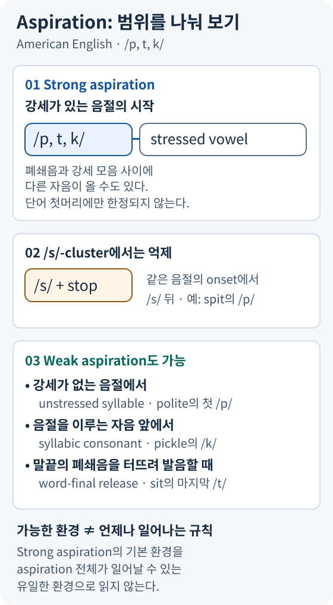

AEP 기반 · 기출 포인트 · VOT / allophone / /s/ cluster / foot-initial
📌 목차 버튼 → 해당 섹션으로 이동 · ▼ 섹션 제목 → 열고 닫기
① voiceless stop aspiration — /p, t, k/가 강세 음절 onset의 첫 분절일 때 [pʰ, tʰ, kʰ]로 실현 · 2022 A-6
② foot-initial position — trochaic foot의 왼쪽 끝을 stop 자체가 차지하는지 확인 · 2022 A-6 (disentangle [tʰ], accountability [kʰ])
③ /s/ cluster blocking — spy / sty / sky에서 aspiration 억제 (pin vs spin)
④ allophone — 영어에서 [pʰ]/[p]는 음소 /p/의 변이음(complementary distribution), 한국어의 stop 범주 대립은 phonemic
즉 강세 음절의 onset에 있다는 것만으로는 부족하다. 같은 onset의 /s/ 뒤에 있는 stop은 이 기본 환경에서 제외한다.
중간에 자음이 끼어도(optional intervening consonant) 적용: creep [kʰrip]에서 /k/와 강세모음 사이에 /r/이 있어도 /k/는 기식음화된다.
Aspiration은 음소 대립을 만들지 않고 환경으로 예측되는 nondistinctive feature를 더하는 규칙이다.
Aspiration을 단순히 “숨이 세게 나온다”로 외우면 release burst와 혼동하기 쉽다. stop의 closure가 풀리는 순간과 뒤따르는 voicing이 시작되는 순간을 구별해 보자. 영어의 aspirated stop에서는 release 뒤에 voicing 없이 공기가 흐르는 구간이 나타난다. [ʰ]는 이를 표시하며, 독립된 phoneme /h/를 단어에 삽입했다는 뜻이 아니다.
따라서 규칙의 σ[를 빼고 “/p, t, k/ → [pʰ, tʰ, kʰ] / __ V́”만 쓰면 spin 같은 자료를 잘못 포함할 수 있다. 먼저 onset의 경계를 표시하고 stop의 위치와 강세를 함께 확인한다. cluster를 narrow transcription할 때에는 뒤따르는 sonorant의 devoicing도 고려할 수 있다. 여기서는 aspiration에 초점을 맞추어 표기했다.
기식 정도는 언어마다 다르다 — 영어는 약하게 기식되는 편이고, Mandarin·Thai·Scots Gaelic 등은 강하게 기식된다.
VOT는 voicing 시작 시각 − release 시각으로 생각하면 부호를 이해하기 쉽다. release 전에 voicing이 시작하면 negative VOT, release와 거의 동시에 시작하면 0에 가까운 VOT, release 뒤에 시작하면 positive VOT다. positive VOT가 모두 strong aspiration을 뜻하는 것은 아니며, short lag와 long lag을 구별해야 한다.
예를 들어 release 시점을 0 ms로 두고 voicing이 −40 ms, +10 ms, +70 ms에 시작한다고 가정하면 voice lead, short lag, long lag의 차이를 설명할 수 있다. 이 수치는 계산을 위한 가상 예시이며 특정 단어·언어의 실측치가 아니다. negative VOT라고 해서 closure 구간 전체에 voicing이 있었다는 뜻도 아니다.
학습용 비교 예시: pool과 spool의 /p/를 보자. Pool의 /p/는 강세 음절의 onset에서 첫 분절이고, spool의 /p/는 같은 onset 안의 /s/ 뒤에 있다. 따라서 두 단어의 /p/는 aspiration 여부가 다를 것으로 예상할 수 있다. 이는 규칙 적용 예시이며 두 단어의 실제 VOT를 측정한 결과가 아니다. 실제 지연 시간은 place of articulation과 뒤따르는 모음 등 발음 조건에 따라서도 달라질 수 있다. 따라서 30 ms라는 하나의 기준으로 모든 자료를 기계적으로 분류하지 않는다.
phonological voicing이 실제 VOT와 일대일로 대응하지는 않는다. 영어 /b, d, ɡ/라는 phoneme 표기만으로 closure 구간 전체에 voicing이 있다거나 VOT가 음수라고 단정할 수 없다. 측정 문제에서는 waveform과 spectrogram에서 release 시점과 voicing 시작 시점을 직접 찾아야 한다.
apart·attack·occur의 /p, t, k/는 단어 첫소리가 아니지만 강세 음절 onset의 첫 분절이므로 strong aspiration의 기본 환경을 충족한다.
2022 A-6 — voiceless stop aspiration이 foot-initial position에서 일어남을 분석. disentangle의 /t/, accountability의 /k/가 강세 음절 onset의 첫 분절이자 foot-initial stop이라 기식음화됨.
Foot(음보)은 강세를 중심으로 음절을 묶는 운율 단위다. 이 지문의 trochaic foot은 강한 음절에서 시작하며 뒤의 약한 음절을 포함할 수 있다. Foot-initial은 그 묶음의 첫 분절이라는 뜻이다. 주강세만이 아니라 부강세도 foot을 시작할 수 있다.
실제 2022 A-6 후보 분석: operation의 밑줄 /p/ 뒤 모음은 무강세이므로 해당 foot의 시작이 아니다. disentangle의 /t/는 주강세 음절의 첫 분절이고, accountability의 /k/는 부강세 음절의 첫 분절이므로 각각 [tʰ], [kʰ]가 된다. substantial의 밑줄 /t/ 뒤에는 강세가 있지만 같은 onset의 /s/가 먼저 오므로 /t/는 foot의 첫 분절이 아니다. 따라서 선택할 두 단어는 disentangle, accountability이다.
답안은 두 단어에 이어 “Voiceless stops are aspirated in foot-initial position”처럼 변화 대상·결과·foot 환경을 연결한다. 이는 지문의 이분법을 설명하는 자체 작성 답안이며, 모든 실제 발화에서 weak aspiration까지 배제한다는 뜻은 아니다. 2022 A-6 원문·풀이
2022 A-6는 두 단어를 고르고 aspiration rule에 foot을 포함하도록 요구했다. 아래에서는 같은 분석 기준을 활용하되 예시 단어와 설명을 새로 구성했다. 아래 단어들은 원문에 실린 후보가 아니다.
| 단어·대상 | 판단 과정 | Strong aspiration |
|---|---|---|
| paper의 두 번째 /p/ | 뒤 모음에 강세가 없으며 대상 /p/가 stressed foot을 시작하지 않는다. | 기본 환경 아님 |
| potato의 첫 /t/ | primary stress를 받는 /teɪ/ 음절의 첫 stop이다. | [tʰ] |
| productivity의 첫 /p/ | 첫 음절에 secondary stress를 두는 발음에서 /p/가 그 foot을 시작한다. primary stress만 확인해서는 안 된다. | [pʰ] |
| stable의 /t/ | 강세 모음 앞이지만 같은 onset 안의 /s/ 뒤에 있다. Foot의 첫 분절은 /t/가 아니다. | Unaspirated |
변형 예시 설명: Under the stated stress patterns, the target stops in potato and productivity begin stressed feet. The target stop in stable follows /s/ within the onset, while the second /p/ in paper precedes an unstressed vowel.
이 설명은 학습용으로 작성한 것이며 원문이나 공식 채점 문구의 인용이 아니다. 특히 secondary stress가 필요한 예시는 여기서 명시한 stress pattern을 전제로 판단한다. 실제 발음에서 나타날 수 있는 weak aspiration과 기출 자료에서 제시한 aspirated/unaspirated의 이분법도 구별해야 한다.
간단한 확인법: 입 앞에 종이를 대고 발음하면 pin에서는 종이가 흔들리지만 spin에서는 거의 움직이지 않는다.
stop이 onset에 포함되어 있는가와 stop이 onset의 첫 분절인가는 다르다. 단어 stop의 /t/는 onset /st/에 포함되지만 첫 분절은 /s/다. 반면 top에서는 /t/가 onset의 첫 분절이다. 이 구조적 차이로 두 단어의 aspiration 여부를 설명할 수 있다.
stay의 /t/와 escape의 /k/도 뒤 모음의 강세만 보면 aspiration을 잘못 예측하기 쉽다. 각각 같은 onset 안에서 /s/ 뒤에 있으므로 unaspirated stop으로 분석한다. 이는 2022 A-6에서 확인한 /s/+stop 판단을 새 단어에 적용한 예이며, 원문 예시를 옮긴 것이 아니다.
/s/가 앞에 있더라도 같은 onset 안에 있는지 확인해야 한다. 단어·형태소·음절 경계가 달라지면 onset 구조부터 다시 확인해야 한다. 이 페이지의 pin/spin, top/stop, cool/school은 같은 onset 안에 /s/+stop cluster가 있는 경우와 없는 경우를 비교한 것이다. /s/ 뒤의 [p]가 unaspirated stop이라고 해서 [b]로 바뀌었거나 phoneme이 /b/가 되었다고 분석해서는 안 된다.
이 비교는 aspiration 유무가 영어에서 별개의 음소 대립을 이루지 않음을 보여 준다. Aspiration의 전체 분포를 나열한 표는 아니다. 비강세 음절과 release되는 word-final stop 등에서 가능한 weak aspiration은 ⑥에서 구분한다.
'불 / 풀 / 뿔'은 첫 stop 범주가 바뀌면 의미가 달라지는 minimal set이다. 위 표기는 범주 비교이며, 실제 발화의 좁은 전사가 아니다.
Pin과 spin은 minimal pair가 아니다. /s/의 유무도 달라지므로 두 단어를 놓고 “aspiration만으로 의미가 달라진다”라고 할 수 없다. 여기서는 서로 다른 환경에서 같은 /p/가 [pʰ]와 [p]로 실현되는 양상을 비교한다. 영어에서 aspiration의 차이만으로 별개의 단어가 대립하지 않는다는 점이 중요하다.
또한 complementary distribution이 나타난다는 이유만으로 임의의 두 소리를 같은 phoneme으로 묶지는 않는다. phonetic similarity와 해당 언어 전반의 대립·분포를 함께 살펴야 한다. /p/가 두 소리로 실현되는 경우에는 place와 manner가 같고 aspiration이 환경에 따라 달라지므로, 같은 phoneme의 allophone으로 분석한다.
한국어의 불·풀·뿔은 첫 stop의 phoneme 범주가 다른 예다. 다만 lenis에는 항상 aspiration이 없다고 외우면 실제 한국어 발음을 제대로 설명할 수 없다. 서울말 연구에서는 lenis와 aspirated의 구별에 VOT뿐 아니라 뒤 모음의 F0도 관여하며, 세대와 prosodic position에 따라 각 단서의 역할이 달라진다. 중요한 것은 phoneme 범주의 대립이 유지된다는 점이다. 모든 화자의 [p]와 [pʰ]가 동일한 VOT 차이를 보인다는 뜻은 아니다.
AEP는 strong aspiration의 기본 환경과 weak aspiration이 가능한 환경을 구분한다. 비강세 음절, syllabic consonant 앞, release되는 word-final stop에서도 weak aspiration이 나타날 수 있다.

2022 A-6 — voiceless stop aspiration · foot-initial position · trochaic foot. disentangle [tʰ], accountability [kʰ]가 각각 foot의 첫 분절이므로 기식음화됨.
AEP는 미국 영어에서 unstressed syllable의 stop, syllabic consonant 앞의 stop, release되는 말끝의 stop에 weak aspiration이 가능하다고 설명한다. 이 조건을 살펴볼 학습용 예시로 happily의 /p/, syllabic [l̩]로 발음한 buckle의 /k/, cap의 말끝 /p/를 비교해 보자. 이 단어들에서 weak aspiration이 반드시 나타난다는 뜻은 아니다. 실제 발음에서 어떤 조건을 확인해야 하는지 연습하기 위한 예다. 특히 syllabic consonant 앞에서 어떻게 release되는지, 단어 끝에서 audible release가 있는지를 먼저 확인한다.
Unaspirated와 unreleased도 같은 말이 아니다. Unaspirated는 release 뒤에 aspiration이 없다는 뜻이고, no audible release는 stop의 release가 들리지 않는다는 뜻이다. word-final /t/가 [t̚]로 실현되는 경우와 release 뒤에 weak aspiration이 있는 경우를 구별해야 한다. 따라서 “coda이므로 반드시 unaspirated” 또는 “word-final이므로 반드시 [ʰ]”라고 일반화해서는 안 된다.
전사 문제에서는 무엇을 표시하는 전사인지부터 확인한다. / /는 phoneme 수준의 표기이고 [ ]는 phonetic realization을 나타낸다. 비교를 위해 [ʰ]를 생략한 전사만 보고 “그 stop은 release되지 않는다”거나 “VOT가 정확히 0이다”라고 추론해서는 안 된다.
규칙을 적용할 때는 대상 stop → onset 경계 → 강세 → /s/ cluster → 제시 자료의 분석 범위 순서로 확인한다. 2022 A-6처럼 foot을 포함하도록 요구하면 이 조건들을 foot-initial이라는 하나의 규칙으로 표현한다. 실제 음성을 측정하는 문제에서는 VOT 수치와 발화 조건을 별도로 확인한다.